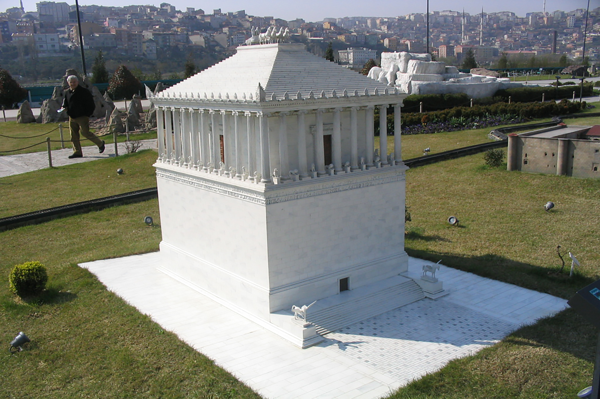
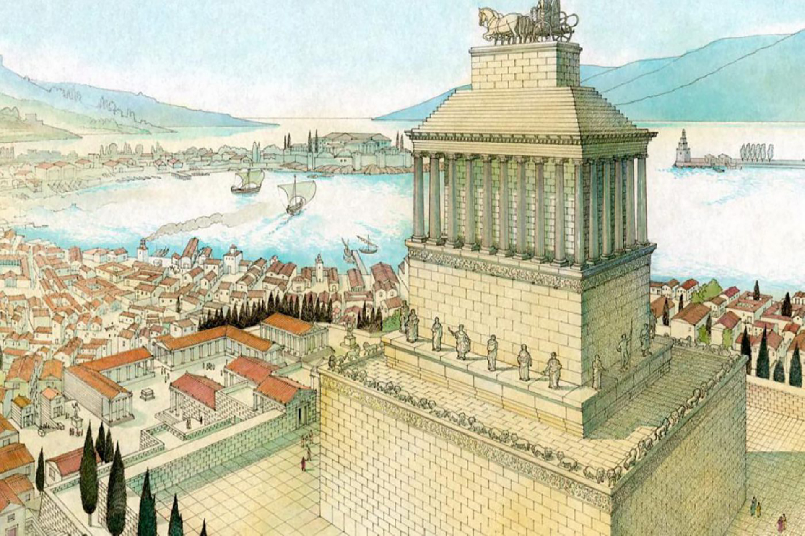
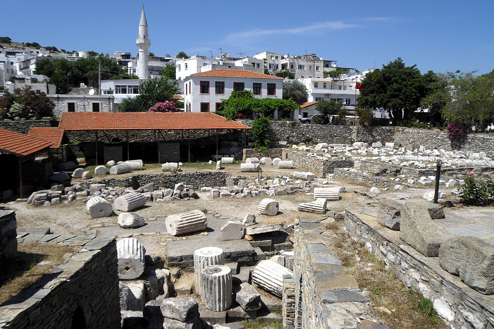

Mauzoleum (także: Mauzoleum w Halikarnasie, obecnie Bodrum w południowo-zachodniej Turcji) – jeden z siedmiu antycznych cudów świata. Był to grobowiec Mauzolosa, perskiego satrapy Karii wzniesiony ok. 350 p.n.e. Budynek został zaprojektowany przez architektów Satyrosa i Pyteosa na polecenie królowej-wdowy – Artemizji. Ozdobili go natomiast rzeźbiarze Skopas, Leochares, Timoteos i Bryaksis z Karii. Mauzoleum nie przetrwało do naszych czasów – zaniedbana budowla pod wpływem upływu czasu, działań ludzi i trzęsień ziemi stopniowo popadała w ruinę. Część zabytków z mauzoleum, m.in. rzeźby, znajduje się w British Museum w Londynie.
Po prawej stronie znajduje się menu prowadzące do konkretnych obiektów uznawanych powszechnie za cudy świata wraz z ich opisem oraz galerią zdjęć. Na samym dole menu znajduje się również przeniesienie do ankiety, do której wypełnienia zachęcam po zapoznaniu się z treścią strony. Wszystkie opinie pomagają ulepszać treść na stronie.